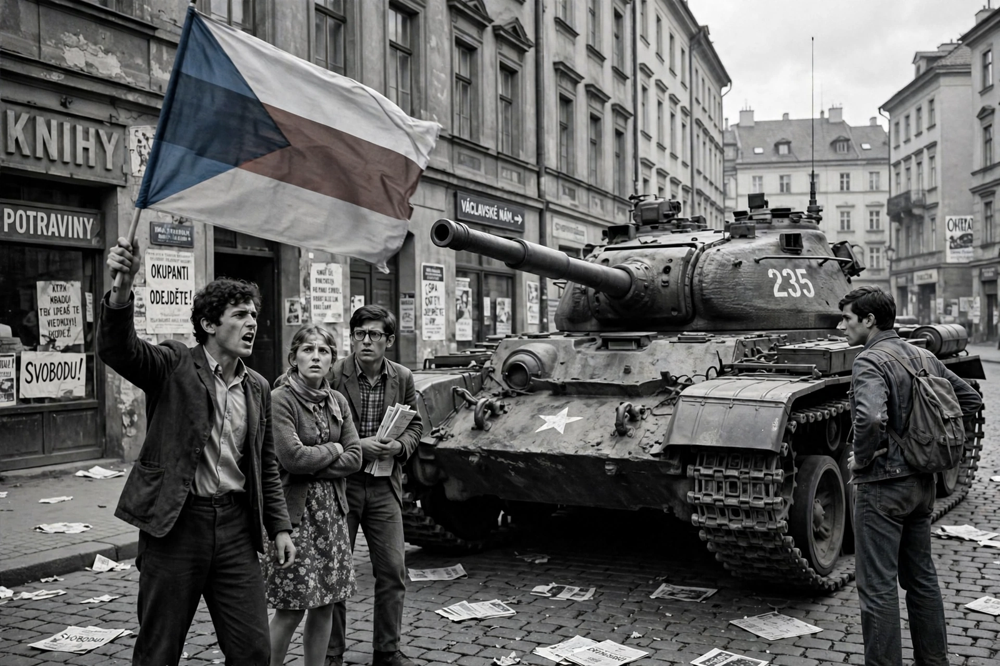

| Prague Spring | |
|---|---|
 Prague, 21 August 1968: citizens confront an invading tank | |
| Date | 5 January – 21 August 1968 |
| Location | Czechoslovakia |
| Key figure | Alexander Dubček |
| Outcome | Warsaw Pact invasion; reforms reversed in "normalization" |
The Prague Spring (Czech: Pražské jaro; Slovak: Pražská jar) was a period of political liberalization and mass protest in Czechoslovakia in 1968, beginning on 5 January when reformist Alexander Dubček became First Secretary of the Communist Party. It ended on 21 August, when the Soviet Union and other Warsaw Pact members invaded to halt the reforms — an act the USSR subsequently justified with the Brezhnev Doctrine.
Dubček's Action Programme of April 1968 promised "socialism with a human face": freedom of speech, press, and travel; decentralization of the economy toward market mechanisms and consumer goods; federalization of the state between Czechs and Slovaks; and a reduced role for the secret police. Pre-publication censorship was formally abolished in June. Intellectuals pushed further — Ludvík Vaculík's "Two Thousand Words" manifesto of June 1968 called on citizens to press for faster democratization — while Dubček insisted the Communist Party would retain its leading role and Czechoslovakia its Warsaw Pact membership.
Moscow, fearing contagion and the loss of a strategic buffer state, first tried pressure at bilateral meetings in Čierná nad Tisou and Bratislava. When that failed, some 200,000–500,000 Warsaw Pact troops from the USSR, Poland, Hungary, Bulgaria, and East Germany (Romania refusing) invaded on the night of 20–21 August. Czechoslovak forces were ordered not to resist; civilians mounted an ingenious passive resistance — removing street signs, arguing with soldiers, broadcasting from clandestine radio — but 137 Czechoslovaks were killed in the initial period. Dubček and other leaders were arrested and flown to Moscow, where they were coerced into signing the Moscow Protocol accepting the occupation.
Dubček was removed in April 1969 and replaced by Gustáv Husák, whose "normalization" purged the party, restored censorship, and froze Czechoslovak politics for two decades. In January 1969 the student Jan Palach set himself on fire in Wenceslas Square in protest. The Prague Spring became a lasting symbol of suppressed reform; its veterans, including future president Václav Havel, carried its memory into the dissent of Charter 77 and the Velvet Revolution that ended communist rule in 1989 — part of the broader Revolutions of 1989.